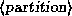

If you are planning to use a swap partition for virtual RAM, you're
ready to prepare it for use. In Chapter 4
we will discuss the preparation of a swap file in case you don't want
to use an individual partition.
In Chapter 4
we will discuss the preparation of a swap file in case you don't want
to use an individual partition.
Many distributions require you to create and activate swap space before installing the software. If you have a small amount of physical RAM, the installation procedure may not be successful unless you have some amount of swap space enabled.
The Slackware distribution requires you to create swap space, before installation, if you have 4 megabytes of RAM or less. If this is not the case, the Slackware installation procedure can be used to prepare swap space automatically. If in doubt, go ahead and follow the procedure described here; it can't hurt.
The command used to prepare a swap partition is mkswap, and it takes the form
mkswap -c 

where  is the name of the swap partition,
and  is the size of the partition, in
blocks.
For example, if your swap partition is /dev/hda3 and is
10336 blocks in size, use the command
is the size of the partition, in
blocks.
For example, if your swap partition is /dev/hda3 and is
10336 blocks in size, use the command
# mkswap --c /dev/hda3 10336
The -c option tells mkswap to check for bad blocks on the partition when creating the swap space.
If you are using multiple swap partitions, you will need to execute the appropriate mkswap command for each partition.
After formatting the swap space, you need to enable it for use by the system. Usually, the system automatically enables swap space at boot time. However, because you have not yet installed the Linux software, you need to enable it by hand.
The command to enable swap space is swapon, and it takes the form
swapon 
In the example above, to enable the swap space on /dev/hda3, we use the command
# swapon /dev/hda3